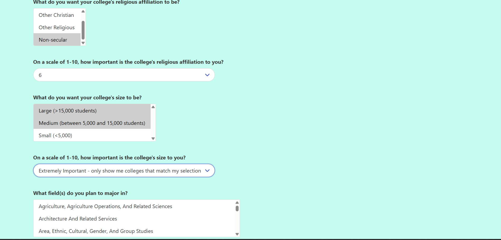
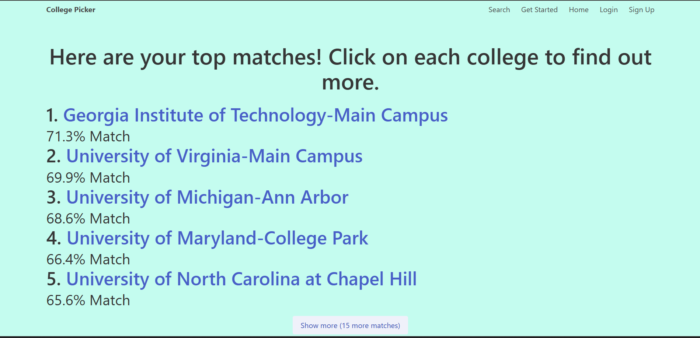
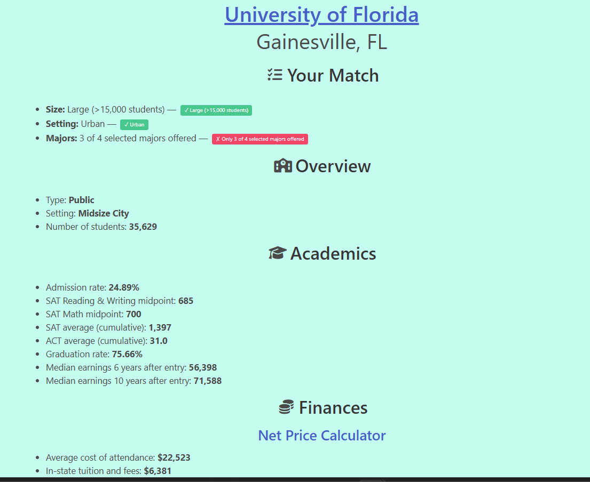
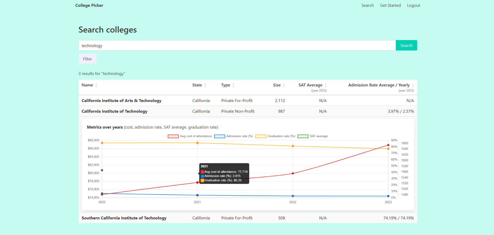

Background
This project was originally built during my first-ever internship, at Aneyeon, Inc., a local custom software development company. At the time, I was trying to figure out what colleges I should apply to and quickly realized how overwhelming that process was. Should I stay in my state or move away? Should I go to a large or small university? Would I be able to afford it? With thousands of colleges to choose from and dozens of criteria for selection, a weighted-preference recommender seemed like a genuinely useful tool. Three years later, it was adapted and expanded for CS 411 (Database Systems) at UIUC as a team project, with heavier SQL requirements, and deployed through Goolge Cloud with MySQL. It was later rewritten solo as a cleaner personal project, with the database migrated to Supabase.
Objective
Ask users a series of questions about college preferences (state, size, religious affiliation, test scores, etc.) and how important each criterion is to them. Generate a ranked up-to-top-20 college list based on weighted preferences, with full detail pages for each match. Also, allow the users to browse colleges directly and explore how their stats have changed over the years.
Outcome
A live, deployed web application demonstrating the full product lifecycle, from intern prototype to a production-ready personal project. Currently hosted on Google Cloud Run with a PostgreSQL database on Supabase.
Screenshots — click to enlarge



